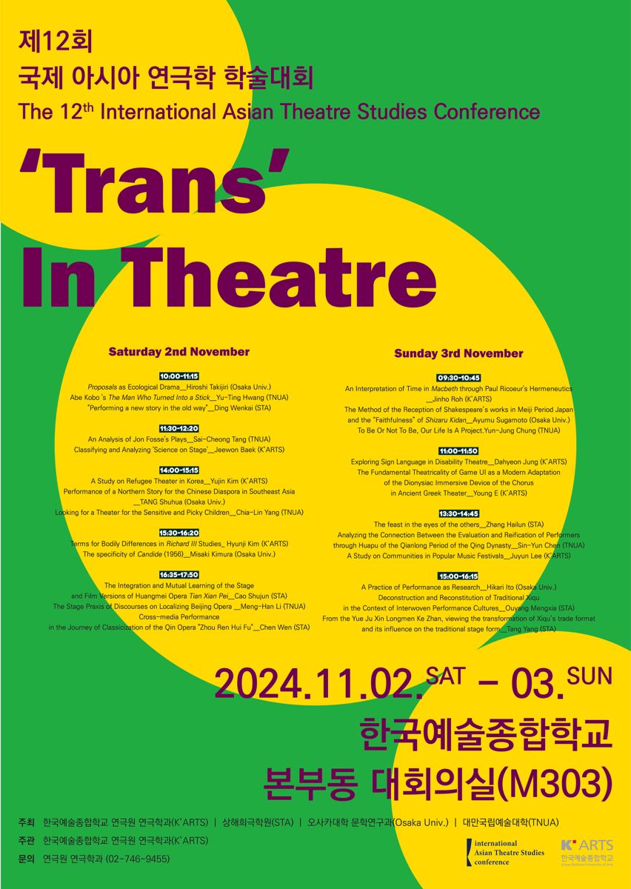

Exploring Sign Language in Disability Theatre: Insights from Kaite O’Reilly’s Peeling and Kim Miran’s This May Be a Failure Story

I. Research Objectives and Significance
This paper explores how contemporary disability theatre expands its linguistic boundaries with multimodal languages. It focuses on two plays that reflect diverse linguistic forms: Peeling by Kaite O’Reilly and This May Be a Failure Story (the original title is Into the Unknown / Mi-ji-e-se-gye-ro, No Elsa). They were produced by National Theater Company of Korea and directed by Kim Miran. These plays go beyond the mere use of sign language on stage; rather, they integrate both spoken language and Deaf actors, fully revealing the polyphonic and multi-layered nature of language.
Disability theatre refers to theatre that is created by, about, and for people with disabilities. It began as a movement influenced by the disability rights movements and disability studies that flourished in the UK and the US in the 1960s and 1970s. The term commonly used to refer to theatre involving people with disabilities includes both “barrier-free theatre” and “disability theatre.” Barrier-free theatre focuses on removing barriers in all aspects of theatre, including the physical and technical aspects, to ensure accessibility. However, this paper is grounded in the social model of disability, as discussed in disability studies, which posits that disability is not an individual issue but one arising from social structures and barriers. This model challenges the notion of disability as merely a “deficit” or “imperfection” and instead considers it as a concept constructed by societal and structural factors.
Sign language is a form used in disability theatre, recognized for possessing its own independent linguistic system and theatrical framework. Initially, the use of sign language in disability theatre developed in the UK and the US theatre to enhance cultural accessibility for the deaf community and to make theatre more inclusive for a broader audience. In the UK, the enactment of the Disability Discrimination Act in 1995 raised awareness about the need to provide reasonable accommodations for people with disabilities, leading many theatres to offer sign language-interpreted performances for the deaf.
In disability theatre, people with disabilities are recognized as a “new generation of artists” who challenge traditional views of disability, creating new works and expressing their unique “voices.” Disability theatre can also be described as a form of “theatre-making” that challenges the traditional conventions of theatre by confronting the ideology of “ableism” within disability culture. Moreover, sign language in disability theatre, which has developed independently within the Deaf community, has not been the subject of significant research in Korea, even though many plays using sign language have been created in contemporary Korean theatre.
The first example, Peeling is a play by contemporary Irish playwright Kaite O’Reilly, who is based in the UK. O’Reilly, a playwright, dramaturg, and artist with a disability, wrote Peeling commissioned by Graeae Theatre Company, one of the UK’s leading disability theatre companies. The play premiered on February 14, 2002, at Birmingham Repertory Theatre. In Peeling, three disabled women appear as the chorus of a modern and “postmodern” adaptation of Euripides’ The Trojan Women, titled The Trojan Women: Then and Now, which takes place offstage, invisible to the audience. The dialogue shifts between British Sign Language (BSL), Sign Supported English (SSE), audio description, and spoken English, exposing the violence disabled individuals have historically experienced in both theatrical production environments and their daily lives.
The second case, This May Be a Failure Story, is a production of National Theater Company of Korea, composed and directed by Kim Miran of the theater group “Sogu.” Kim participated in the 2021 [Changzak Gonggam: Directors] program, which focused on the theme of “Disability and Art.” The play is a documentary theatre that portrays the communication process between Park Ji-young, a Deaf actor from the Deaf arts group “Hand Speak,” and hearing actor Lee Won-jun as they collaborate on creating a play. This May Be a Failure Story challenges the objectification of disability and its associated language in the history of theatre, using humor to subvert reality and invite reflection on the subjectivity of theatre. Through this play, Park Ji-young became the first Deaf actor to be nominated for the Best Acting Award in Theater at the 58th Baeksang Arts Awards, while Kim Miran won the Young Theater Award in the Theater category.
Both plays, as analyzed in this paper, expose the dissonance of incommunicable languages, prompting reconsideration of sociopolitical discord. This dissonance aligns with the ‘social model’ of disability studies, which views disability as constructed by a society designed primarily for non-disabled individuals. In other words, it is societal discrimination that defines and constructs disability. Ultimately, these two plays speak to “the power of agency — the ability for those labeled as problems to redefine the problem themselves” — and highlight the importance of “solidarity,” which transcends the dichotomy between interdependence and dependence, an aspect that cannot be fully understood through the capitalist concepts of “self-reliance” or “self-sufficiency” through languages.
📌 제12회 국제 아시아 연극학 학술대회(The 12th International Asian Theatre Studies Conference) 발표 논문